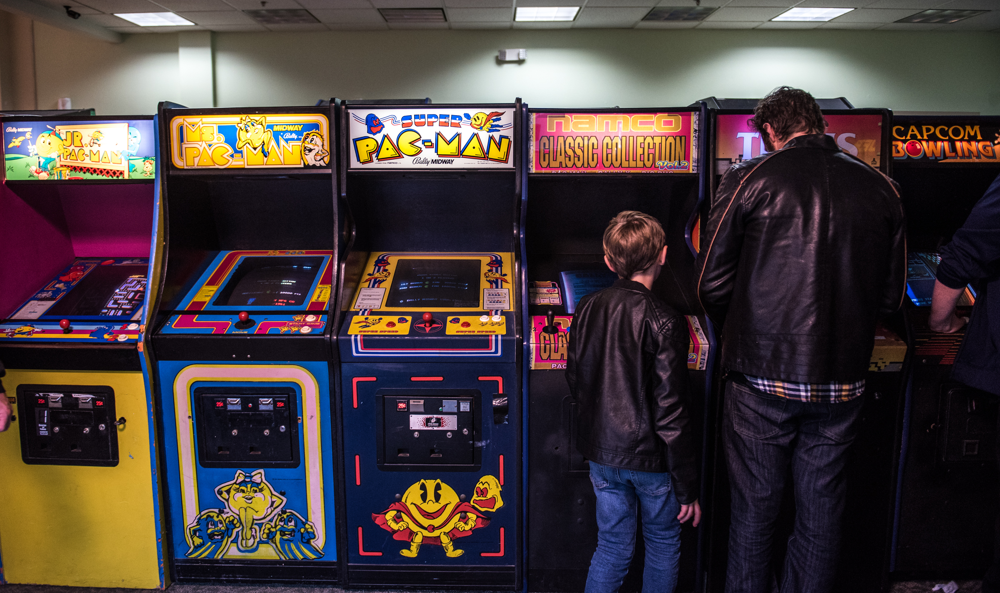
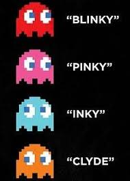

PACMAN

(パックマン Pakku Man?) es un videojuego arcade creado por el diseñador de videojuegos Toru Iwatani de la empresa Namco, y distribuido por Midway Games al mercado estadounidense a principios de los años 1980.
Desde que Pac-Man fue lanzado el 22 de mayo de 1980,4 fue un éxito. Se convirtió en un fenómeno mundial en la industria de los videojuegos, llegó a tener el récord Guiness del videojuego de arcade más exitoso de todos los tiempos con un total de 293 822 máquinas vendidas desde 1981 hasta 1987 y acabó con el dominio de Space Invaders, donde la acción predominante era shoot 'em up (disparar a todos) para reemplazarla por un formato único, más humorístico y poco violento que gustó a muchísimas personas. "Todos los juegos que estaban disponibles en ese entonces -fines de los 70- eran de tipo violento, de guerra o como el Space Invaders", recordó en una entrevista Iwatani, agregando que "no había juegos que todos pudieran disfrutar, y especialmente no había ninguno para mujeres. Quería hacer un juego 'cómico' que las mujeres pudiesen disfrutar".
El nombre del juego proviene de la onomatopeya japonesa paku (パク?), sonido que se produce al abrir y cerrar la boca. El nombre se romanizó como Puck-Man en Japón (en inglés, puck se pronuncia pac en español). Sin embargo, Midway lo modificó a Pac-Man para el mercado estadounidense (y posteriormente otros mercados occidentales) debido a que la gente podría vandalizar la «P» de Puck-Man pintando encima una «F», formando una grosería en inglés.
En España, este juego era coloquialmente conocido como Comecocos debido a que se anunciaba de esta manera en televisión la versión para Atari 2600 a principios de los años 1980 aunque su nombre oficial seguía siendo Pac-Man. Se popularizó tanto entre la población española que la empresa MB tituló de esta manera la versión española de su juego de mesa basado en Pac-Man.
Acontecimientos Historicos

Juego Perfecto
En 1999, el videojugador Billy Mitchell jugó por primera vez una partida perfecta de Pac-Man, entendiéndose como tal una partida en que el jugador debe completar los 255 niveles con la puntuación máxima sin ser capturado ni una sola vez. La puntuación máxima es de 3 333 360 puntos. Sin embargo, en abril de 2018, Twin Galaxies borró todas las puntuaciones de Mitchell tras confirmar que el mismo usó emulación en lugar de las máquinas arcade originales.
Campeonato Mundial
El 5 de junio de 2007 se celebró, en la ciudad de Nueva York, el campeonato mundial de Pac-Man, donde el mexicano Carlos Daniel Borrego, se llevó a casa el torneo después de haber sido coronado y premiado por el mismísimo Toru Iwatani como el primer y único campeón mundial de Pac-Man. El campeonato fue promocionado por Bandai Namco y Microsoft; entre los premios se encontraban 100 000 Microsoft Points y una consola Xbox 360 basada en Pac-Man con el autógrafo del creador única en el mundo.
Modo de Juego

El protagonista del videojuego Pac-Man es un círculo amarillo al que le falta un sector, por lo que parece tener boca. Aparece en laberintos donde debe comer puntos pequeños (llamados «Pac-dots» en inglés), puntos mayores y otros premios con forma de frutas y otros objetos. El objetivo del personaje es comer todos los puntos de la pantalla, momento en el que se pasa al siguiente nivel o pantalla. Sin embargo, cuatro fantasmas o monstruos, Shadow (Blinky), Speedy (Pinky), Bashful (Inky) y Pokey (Clyde), recorren el laberinto para intentar capturar a Pac-Man. Estos fantasmas son, respectivamente, de colores rojo, rosa, cian y naranja. En el juego original (Puck-Man), los fantasmas se llamaban Akabei, Pinky, Aosuke y Guzuta. Los fantasmas no son iguales, así mientras Blinky es muy rápido, y tiene la habilidad de encontrar a Pac-Man en el escenario, Inky es muy lento y muchas veces evitará el encuentro con Pac-Man.
Hay un «pasillo» a los costados del laberinto que permiten a Pac- Man o sus enemigos transportarse al costado opuesto (sale por la derecha y reingresa por la izquierda, o viceversa). Cuatro puntos más grandes de lo normal situados cerca de las esquinas del laberinto nombrados en inglés Power Pellets (que en español lo han traducido en diversas formas como «píldoras mágicas» o «de poder», «bolas de energía» o simplemente «punto de poder»), proporcionan a Pac-Man, durante un tiempo limitado, la habilidad de comerse él a los monstruos (todos ellos se vuelven azules mientras Pac-Man tiene esa habilidad), tras lo cual todo vuelve a ser como al principio.
Después de haber sido «comidos» por Pac-Man, los fantasmas se regeneran en «casa» (una caja situada en el centro del laberinto). El tiempo en que los monstruos permanecen vulnerables varía según la pantalla, pero tiende a decrecer a medida que progresa el juego, y al cabo de muchas pantallas los puntos especiales no tienen ningún efecto sobre los fantasmas, con la excepción del nivel 6 en el que el efecto dura unos segundos más que en el 5.
Hay unos descansos entre algunas pantallas (entre la 2 y la 3, 5 y 6, 9 y 10 y posteriormente cada cuatro pantallas) en que se ven escenas humorísticas sobre Pac-Man y los fantasmas.
Además de comer los puntos, Pac-Man puede obtener puntuación adicional si se come alguno de los objetos que aparecen dos veces por pantalla justo debajo de la caja en el centro del laberinto de donde salen los monstruos.
El objeto cambia cada pantalla o dos, y su valor en puntos aumenta, de forma que dos cerezas (el premio de la primera pantalla) valen 100 puntos, mientras que el último objeto, la llave, vale 5000.
Fantasmas

Inicialmente, los enemigos de Pac-Man eran referidos como monstruos en el mundo arcade, pero pronto se convirtieron en fantasmas mayormente de diferentes colores. Los fantasmas no son capaces de mover a la dirección opuesta de su movimiento actual.
Los fantasmas están limitados por el laberinto de la misma manera que Pac-Man, pero por lo general se mueven ligeramente más rápido que el jugador, aunque se vuelven más lentos cuando se activan los puntos especiales de las esquinas y se ralentizan significativamente al pasar a través de los túneles a los lados del laberinto (mientras que Pac-Man pasa a través de estos túneles sin trabas). Pac-Man se ralentiza ligeramente mientras come puntos, permitiendo potencialmente a un fantasma perseguidor que le capture durante esos momentos.
Nombres
| COLOR | Personaje | Traducción | Apodo | Personaje Alternativo | Apodo Alternativo | Personaje Estadounidense | Apodo Estadounidense |
|---|---|---|---|---|---|---|---|
| Rojo | Oikake (追いかけ) | Cazador | Akabei (赤ベイ) | Urchin | Macky | Shadow | Blinky |
| Rosa | Machibuse (待ち伏せ) | Emboscador | Pinky (ピンキー) | Romp | Micky | Speedy | Pinky |
| Cian | Kimagure (気まぐれ) | Caprichoso | Aosuke (青助) | Stylist | Mucky | Bashful | Inky | Naranja | Otoboke (お惚け) | Bobo | Guzuta (愚図た) | Crybaby | Mocky | Pokey | Clyde |
Otras Apariciones
Peliculas